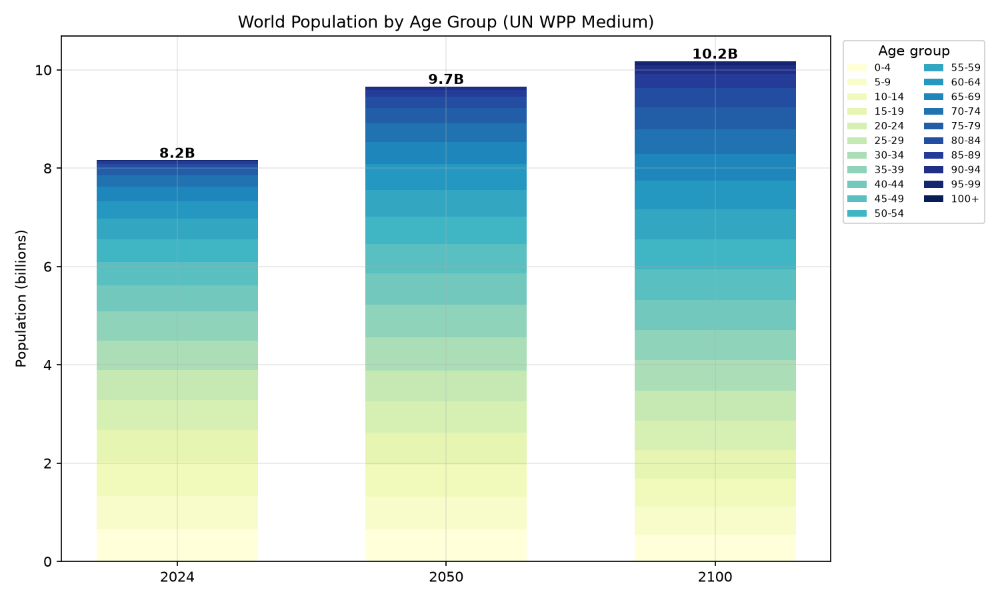
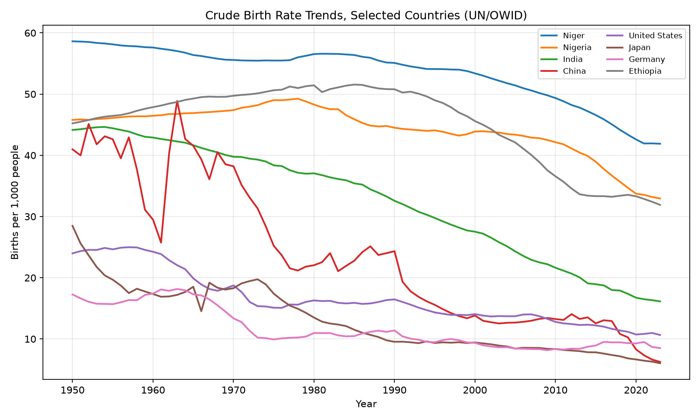
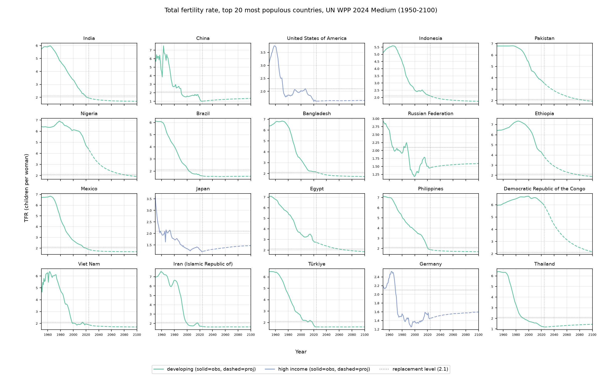
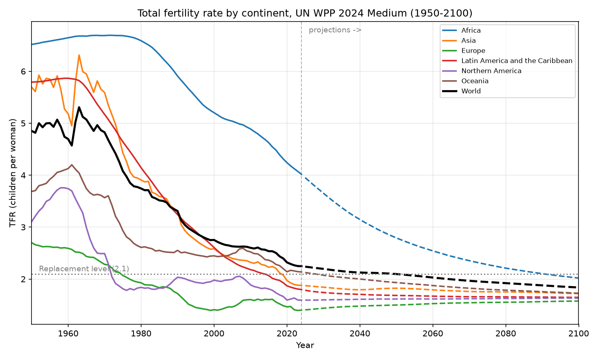
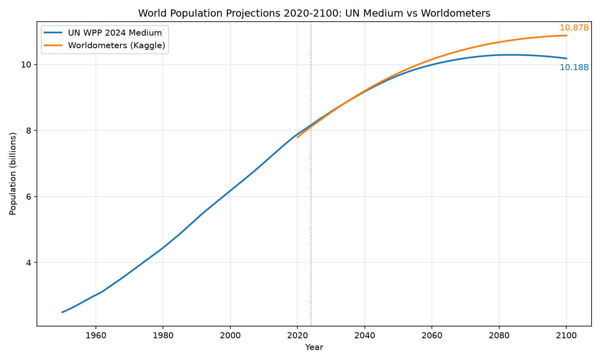

The Consequences of Falling Fertility — and What Can Be Done About It
A companion report to report.md (World Population, Birth Rates, and Long-Term Projections). Where the main report establishes what is happening to global fertility, this report analyzes what follows: the economic, fiscal, and social consequences of sub-replacement fertility, the policy responses now running at national scale, and the honest counterarguments to demographic alarmism.
Scope and method note. This synthesis draws on (1) UN World Population Prospects 2024 and Our World in Data datasets already processed in data/processed/, (2) an academic-evidence review of 14 peer-reviewed papers ( summarized in population_aging_research_report.md), and (3) structured research on Japan, Korea, China, Europe, and pro-natal policy design. Figures sourced directly from official statistics (UN, OECD, Eurostat, national agencies) are labeled with their source; a small number of figures come from general knowledge and are flagged [verify] before quotation in formal work. Charts below reuse the same charts/ assets as the main report.
1. Executive summary
- Global fertility has fallen from ~4.85 children per woman (1950) to ~2.3 today; the UN projects ~1.8 by 2100, and IHME/Lancet modelers project ~1.59 by 2100 — both far below replacement (~2.1).
- The consequences are already visible: more than half the world's population lives in countries below replacement fertility, and roughly two-thirds of countries (including 80%+ of high-income ones) are under 2.1.
- Economically, sustained fertility decline produces slower workforce growth, faster population aging, and — depending on the study — measurable growth drag. The academic evidence spans demographic dividend accounting (Bloom & Williamson 1998: roughly one-third of East Asia's growth miracle), aging-and-growth regressions (Maestas et al.: each 10-point rise in the 60+ share cuts per-capita GDP growth ~5.5%), automation offsets (Acemoglu–Restrepo), and secular stagnation mechanisms (Eggertsson et al.).
- Fiscal consequences are the most mechanical: shrinking worker-to-pensioner ratios strain pay-as-you-go systems. Japan's population is projected to fall 45% by 2100 (OECD); China's pension funds are modeled to run down around 2035 [verify].
- Policy responses are expensive and produce partial, slow, and contested effects: Korea has spent over $200 billion since 2006 with TFR still at 0.72 (2023); Hungary spends ~5% of GDP on family policy with TFR up from 1.23 to roughly 1.5–1.6 [verify — later estimates put it lower]; cash incentives work partly on timing rather than total births (Israel extramarital-benefit study, Cohen et al. 2013: up to +19.2%).
- The strongest evidence-backed levers are not cash: couple-level reconciliation policy (Doepke & Kindermann 2019), childcare and parental-leave design, labor-market and housing affordability, and — reluctantly but plausibly — immigration.
- The contrarian case (Bricker & Ibbitson, Empty Planet, 2019) argues the UN habitually over-projects, that rapid urbanization in Africa and Asia will push fertility down faster than models assume, and that depopulation is a manageable challenge rather than catastrophe. Both the alarmist and complacent readings carry real risk.
Part I — The demographic setup: how low, how fast
2. Where the numbers stand




The setup from the main report, compressed for this analysis:
| Indicator | Value | Source |
|---|---|---|
| World TFR (2024) | ~2.25 | UN WPP 2024 / OWID |
| World TFR (2100, Medium) | ~1.8 | UN WPP 2024 |
| World TFR (2100, IHME) | 1.59 | Lancet/IHME 2024 |
| Countries below replacement (TFR < 2.1) | ~2/3 of all countries; >50% of world population | UN 2024 |
| 65+ share of world population | 10.2% (2024) → ~24% (2100) | UN WPP 2024 |
| Population peak (Medium) | ~10.3B mid-2080s | UN WPP 2024 |
| Population 2100 (IHME) | ~8.8B, declining from ~2060 | Lancet 2024 |
Key 2023–24 national TFRs (official vital statistics where available; OECD/NCHS/Eurostat):
| Country | TFR (latest) | Note |
|---|---|---|
| South Korea | 0.72 (2023) | Lowest recorded national figure in modern data |
| China | ~1.0–1.2 [verify] | 2022 population peak; births falling since |
| Japan | 1.20 (2023, vital stats); 1.26 (2022) | 8th consecutive annual birth decline |
| Italy / Spain | ~1.2 | Record-low EU registration year 2023 |
| Germany | ~1.35 | Below EU average |
| EU-27 average | ~1.34–1.38 (2023–24) | Eurostat records the lowest-ever EU total |
| United States | 1.62 (2023) | CDC/NCHS provisional vital statistics |
| France | ~1.5 (2024 provisional) | Falls below 1.6 for the first time in modern series |
| Nordic countries | 1.4–1.5 | Sustained post-2010 decline despite generous policy |


The critical structural fact for everything that follows: fertility decline is fastest precisely in the regions that will dominate the world economy over the next 40 years — East Asia, and increasingly South Asia and Latin America. Africa alone retains above-replacement fertility, and even there urban fertility is falling.
Part II — Macroeconomic consequences
3. The demographic dividend in reverse
The best-quantified economic framework is the demographic dividend literature (Bloom & Williamson 1998; Bloom, Canning & Sevilla 2003, RAND MR-1274; Lee 2003, Journal of Economic Perspectives):
- A falling dependency ratio (working-age share rising) boosts growth because savings rise, capital deepens, and women's labor participation increases.
- East Asia's 1965–1990 miracle is estimated to owe roughly one-third of its GDP-per-capita growth to demographics alone (Bloom & Williamson 1998).
- Sub-replacement fertility reverses this arithmetic: the working-age share peaks and then shrinks in absolute numbers. Japan crossed this line around 1995–2000; China around 2012–2015 (working-age population peaked ~2012; total population peaked 2022 [verify exact year]); Korea's working-age population began falling in 2017.
The dividend does not mechanically become a tax — the same literature emphasizes that East Asia captured its dividend through policy (export-led growth, education, savings institutions), and that aging countries can soften the reversal the same way (Later retirement, higher female participation, productivity policy). But the baseline drift is negative.
4. Does aging actually slow growth? The evidence map
The academic review (population_aging_research_report.md) identifies four main empirical positions:
- Growth drag is real and large. Maestas, Mullen & Powell (2020, JME): a 10-percentage-point rise in the 60+ population share reduces per-capita GDP growth by ~5.5% in US state-level panel data, with most of the effect through slower labor-productivity and labor-supply growth.
- Aging can raise growth via capital deepening. Eggertsson, Mehrotra & Robbins (2019): in secular-stagnation models, aging lowers real interest rates and raises output per worker through capital deepening even as total growth slows; the effect is mechanism-dependent.
- Automation partially offsets aging. Acemoglu & Restrepo (2022, JEP): countries with faster aging adopt more robotics; the productivity gains offset part — not all — of the labor-supply decline. A 2026 Japanese causal study of nursing homes [verify citation before quoting] finds AI/care-robot adoption measurably offsets care-worker shortages without degrading quality — the strongest concrete automation-offset evidence to date.
- Historical context matters. Ronald Lee (2003): transfers across ages dominated most of human demographic history; institutional adaptation (pensions, health systems, retirement norms) has repeatedly absorbed larger age-structure shifts than today's.
Bottom line: aging is a genuine, measurable headwind to aggregate growth — but the range of estimates is wide, and the offsetting levers (productivity, automation, participation) are real. The honest framing is slower growth and rising transfer burdens, not collapse.
5. The interest-rate and macro-financial debate
Fertility decline interacts with saving and investment in ways that are still contested:
- Secular stagnation channel (Summers; Eggertsson et al. 2019): lower fertility → lower investment demand and higher precautionary saving → persistently low real rates and weak demand. Japan since the 1990s is the canonical case.
- Asset-price channel: pension-fund accumulation then drawdown creates predictable buy/sell waves (pot-belly effect); aging populations are argued to depress equity risk premia over decades [verify — this remains a live academic debate, e.g., Geanakoplos, Magill & Quinzii].
- Deflationary pressure: Japan's experience — aging + deleveraging + weak demand = decades of low inflation despite massive monetary easing — is the template macro-financial worry for China and Korea.
6. Fiscal consequences: pensions, health, and dependency arithmetic

This is the most mechanical part of the analysis: pay-as-you-go pension systems need roughly 2–3 workers per beneficiary to remain stable at current benefit levels.
- Japan: OECD projects population −45% and employment −52% by 2100. The 2004 pension reform built in an automatic demographic stabilizer (the "macroeconomic slide," マクロ経済スライド) that cuts real benefits as the worker/beneficiary ratio falls — the most explicit acknowledgment that demography overrides politics.
- China: the Chinese Academy of Social Sciences modeling (2019) projects the combined urban-worker pension fund running out around 2035 [verify], with the old-age dependency ratio roughly doubling by 2050 and the 65+ share moving from ~15% toward ~30% by mid-century.
- Korea: has the fastest-aging rich-country profile on record — a 65+ share rising toward ~40% by 2050 — with pensions, long-term care insurance, and national debt (already >100% of GDP [verify]) all expanding together.
- Europe: the EU Ageing Report 2024 projects age-related public spending rising by several percentage points of GDP by 2050 under current policy, with country dispersion driven mainly by pension-system design.
- US: Social Security's trustees project trust-fund depletion in the mid-2030s with a permanent ~20% benefit cut absent reform [verify current projection year] — mild by OECD standards, but the politics are the binding constraint.
The general pattern: every aging society eventually faces the same three-way choice — raise taxes, cut benefits, or import workers (or some combination). Delay makes each option worse because the population structure compounds.
Part III — Case studies
7. Japan: the first-mover problem
Japan is roughly 25 years ahead of the rest of the rich world demographically, making it the best natural experiment for what sub-replacement fertility does over a full generation.
The numbers: - TFR 1.20 (2023 vital statistics; 1.26 in 2022); births fell −5.1% year-over-year in 2023, the 8th consecutive annual decline (MHLW data, reported by CNN, March 2024). - Population: 124.9M (2023) → 87.0M projected by 2070 (National Institute of Population and Social Security Research; CSIS briefing, November 2023). - 65+ share: ~29% — the highest of any large economy. - OECD long-run projection: population −45%, employment −52% by 2100.
Documented causes: - The child penalty is severe and gendered: the widely cited figure is that Japanese mothers' employment drops by ~44.5% relative to pre-birth levels [verify against original study — likely Kawaguchi/others], while fathers' is negligible. - Housing and labor-market rigidity: long work hours, the dual (regular/non-regular) employment system, and urban housing costs all act as fertility suppressants. - Marriage decline is the proximate driver: non-marital births remain ~2% of all births (vs ~40% OECD average), so falling marriage rates translate almost one-for-one into falling births.
Policy record: - Angels Plan / New Angels Plan (1994, 1999): childcare infrastructure expansion. - Cohen, Fujiwara & Harmon (2013) — the best-identified study of Japanese cash policy: fertility-support allowances raised fertility by up to 19.2% in treated municipalities, but much of the effect was timing advancement rather than completed fertility. - Kōseishō "childcare waitlist" reforms (2013–) and work-style reform (2019) with caps on overtime — the reconciliation turn. - Result so far: TFR rose from ~1.26 (2005) to ~1.45 (2015) then fell back to ~1.2. Demography's momentum beat policy momentum.
8. South Korea: the high-spend, low-result cautionary tale
- Spending: ~380 trillion won (over $200 billion) in pro-natal programs since 2006 [verify total], peaking in the 2020s — roughly 1–2% of GDP per year at times.
- Result: TFR fell from 1.19 (2010) to a modern-record 0.72 (2023) — the deepest sustained low-fertility equilibrium observed in any country.
- 2024 provisional data show the first uptick (TFR ~0.75 [verify]) after marriage rates rebounded post-COVID — a reminder that timing effects can masquerade as policy success.
- Structural drivers that spending did not touch: extreme gender-role asymmetry, housing costs (Seoul apartment prices), private-education arms races (hagwon), and a work culture hostile to dual-earner parenting. Korea's child penalty and gender-wage-gap are the worst in the OECD.
- Political response: creation of a dedicated Ministry-level planning office (2024) and a shift in rhetoric from cash to "structural" fixes.
Lesson: money without structural change fails. Korea spent a mid-sized economy's worth of fiscal capacity on policies that did not alter the underlying couple-level and workplace constraints.
9. China: the policy-reversal trap
- Population peaked in 2022 [verify exact year] and began declining — the first decline since the 1960s famine era.
- TFR ~1.0–1.2 [verify] after the end of the one-child policy (2016 two-child, 2021 three-child).
- The age structure is aging before getting rich: 65+ share ~15% heading toward ~30% by 2050, with GDP per capita a fraction of Japan's at the equivalent demographic point.
- Pension arithmetic: CASS 2019 modeling projects fund depletion ~2035 [verify]; the household-registration (hukou) system fragments the labor response.
- Pro-natal measures (subsidies, relaxed restrictions, propaganda) have had negligible measured effect; birth registrations keep falling.
Lesson: China shows that fertility suppression is easy and fertility restoration is not. Two generations of low fertility built norms, housing stock, and family economics that policy reversal could not unwind.
10. Europe: from laggards to leaders to relapse


- EU-wide: Eurostat records the lowest-ever EU TFR (~1.34–1.38) in 2023–24, with Italy and Spain at ~1.2.
- Southern Europe (Italy, Spain, Greece): pioneered low fertility despite weak state support — the "familistic welfare" failure, where family care burden falls on households (and largely on women) without public childcare.
- France and the Nordics (1990s–2015): the demonstration case that reconciliation policy works — generous leave, universal childcare, parental sharing incentives (Sweden's "daddy months") held TFR near 1.8–2.0 for a generation.
- The relapse (2016–present): France fell to ~1.5 (2024 provisional, IGAS review commissioned 2026); all Nordic countries fell to 1.4–1.5. The post-2010 fertility decline hit generous-policy countries as hard as stingy ones — the strongest empirical argument that policy cannot fully offset broad economic/cultural shifts (uncertainty, delayed partnership, housing).
- Newer aggressive programs: Hungary (below), Poland's 500+/800+ cash program (GUS evaluation found modest, mostly timing, effects on fertility [verify]), Germany's parental benefit (Bundeselterngeld) and childcare guarantee.
11. Hungary: the maximal-effort test case
- Family spending pushed to ~5% of GDP — the highest share in the OECD (CSOK housing subsidies, tax credits per child, lifetime income-tax exemption for mothers of 4+, baby loans forgiven on the third child).
- Official TFR: 1.23 (2010) → ~1.5–1.6 peak (2021) [verify; later years show decline back toward ~1.4].
- Independent assessment: the rise is real but modest relative to spending; part is timing and part is selection (higher fertility among rural/religious populations the policy targets). Emigration of working-age adults worsens the dependency arithmetic regardless of TFR.
- Hungary is the natural-experiment upper bound: even the most expensive pro-natal program in the world restored only a fraction of lost fertility.
Part IV — What works: the policy evidence
12. The couple-level turn: Doepke & Kindermann
The most influential modern policy paper is Doepke & Kindermann (2019, AEA Papers & Proceedings), "Love, Money, and Parental Care":
- Fertility decisions are couple decisions; births happen where partners' fertility preferences converge.
- The binding constraint in most low-fertility countries is not total income but who bears the cost: where the mother bears a large "child penalty," second and third births fail at the preference-conflict stage.
- Policy that redistributes parental cost between partners (parental leave reserved for fathers, childcare that doesn't require one parent to exit the labor force, normalized part-time work) raises fertility more effectively per unit of spending than cash transfers.
- This explains the France/Sweden success (1990s–2010s), the Japan/Korea failure (cash + rhetoric, weak redistribution), and — with caveats — why even successful countries declined after 2016.

13. The evidence on each instrument
| Instrument | Evidence | Assessment |
|---|---|---|
| Cash transfers | Israel extramarital-child-benefit quasi-experiment (Cohen, Einav & Mayshar / related work): strong responses; Japan municipal allowances: up to +19.2% (Cohen et al. 2013); Poland 500+: small net effect, mostly timing [verify] | Works on timing and possibly completed fertility at the margin; expensive per additional birth; does not fix structural constraints |
| Childcare provision | Cross-country and within-country evidence consistently positive where availability was previously scarce (Quebec's mixed legacy; Germany's East/West contrast) | Best-documented reconciliation lever |
| Parental leave (with father quotas) | Nordic design evidence; Iceland/Sweden father-quota studies show shifted care distribution | Effective as a bundle, not as leave alone (long mother-only leave lowers fertility in some studies) |
| Housing policy | Strong micro evidence that housing costs suppress fertility (UK, Korea, US metro analyses) | High-leverage but politically hard |
| Labor-market reform | Regular/non-regular employment tracks with fertility in Japan/Korea; secure contracts correlate with family formation | Indirect but structurally important |
| Immigration | US/Canada/Australia histories; Canada's 2023–24 intake cuts [verify current figures] show political fragility | Offsets workforce aging directly; does not raise native TFR; second-generation fertility converges down |
| Retirement/pension reform | Working-longer reforms offset labor shrinkage mechanically | Essential for fiscal arithmetic, irrelevant to fertility itself |
| Automation & AI | Acemoglu–Restrepo cross-country; 2026 Japanese care-sector causal study [verify] | Real but partial offset to labor shortages; does nothing for pension ratios directly |
14. The honest policy synthesis
- No known policy restores replacement fertility once a low-fertility equilibrium sets in. Hungary's maximal effort moved TFR by ~0.2–0.3; Korea's $200B+ moved nothing structural.
- The highest-evidence bundle is reconciliation policy (childcare + father-inclusive leave + normalizing maternal employment) plus housing and employment security — the France/Sweden recipe — and even that holds TFR near 1.6–1.8, not 2.1, in the current environment.
- Timing effects are real and worth having (deferring decline), but must not be sold as restoration.
- The fiscal side has its own levers independent of fertility: later retirement, higher female and older-worker participation, productivity investment, automation adoption, and pension-system redesign (automatic stabilizers, multi-pillar funding).
- Immigration is the fastest demographic instrument available — it moves the working-age population immediately — but is politically constrained everywhere it's most needed (Japan, Korea, Italy, and increasingly the US and Canada).
Part V — The contrarian case: is this even a crisis?


15. Empty Planet and the overshoot critique
Bricker & Ibbitson (2019, Empty Planet, Crown) argue:
- The UN's Medium projection habitually overshoots. Historical UN revisions have repeatedly revised downward; the Low scenario may effectively be the Medium of 20 years hence. The IHME/Lancet 2024 forecast (1.59 by 2100, peak ~2060, population falling to ~8.8B) is a mainstream institution saying much the same.
- Urbanization is the hidden fertility killer. As Africa urbanizes at East-Asian speed, city fertility norms (1.3–1.7) will dominate faster than models currently assume.
- Depopulation is manageable: capital substitution, robotization, higher retirement ages, and continued per-capita growth can keep living standards rising with flat or falling headcounts. The "aging crisis" framing, they argue, is dominated by pension-system design problems, not demographic inevitability.
16. Assessing the contrarian case honestly
Where it is strong: - UN Medium-vs-Low spread at 2100 is enormous (10.2B vs 7.0B); forecasting error is real and systematically one-directional in the historical record [verify revision history]. - Several once-"certain" milestones (e.g., Nigeria's projected size) have already been revised down sharply. - Policy discourse overweighting headcount and underweighting per-capita welfare is a genuine analytical error.
Where it is weak: - It understates the speed problem: even under optimistic fertility paths, the 65+ share keeps climbing for decades because today's children are already born (demographic momentum runs both ways). - Its institutional-optimism assumption (robots + productivity + reform) has no working large-country demonstration yet — Japan is the test case, and its experience is a grind, not a vindication. - The claim that per-capita welfare is unaffected by aging is contradicted by the fiscal arithmetic in every pay-as-you-go system examined.
The synthesis position: the direction (aging, shrinking working-age shares) is certain; the magnitude and speed (UN Medium vs IHME vs Empty Planet) is genuinely uncertain by a factor large enough to change policy design. Prudent policy should be robust across the whole range — which, conveniently, is the same policy set: reconciliation support, later retirement, productivity and automation investment, pension stabilizers, and selective immigration.
Part VI — Open questions and research leads
- Timing vs quantum: disentangle how much of observed policy response is tempo (postponement) vs completed fertility — the central unresolved measurement problem in pro-natal evaluation.
- The post-2016 decline in generous-policy countries: why did France and the Nordics fall? Candidate mechanisms: uncertainty (climate/economic), partnership delay, social-media dating markets, housing. None yet pinned down causally.
- Automation offsets at scale: how much of labor-supply decline can robot/AI adoption absorb in care, construction, and agriculture — the sectors aging hits first? The Japanese care-sector causal evidence is the frontier.
- Pension-system robustness: which designs (automatic demographic stabilizers vs parametric reform vs funded pillars) have survived actual demographic stress best? Japan's macroeconomic slide vs Sweden's NDC system are the live comparisons.
- Immigration's second-generation dynamics: convergence of migrant-descendant fertility toward native levels varies by origin and integration — how fast, and what does that imply for long-run projections?
- The China unwind: what does 40 years of one-child policy do to norms that persist after removal? Korea under different conditions, same question.
- Health-span vs life-span: the fiscal projections assume rising health costs per elder; compression-of-morbidity evidence would change the arithmetic materially in the optimistic direction.
Sources
Datasets (processed in this repo): UN World Population Prospects 2024; Our World in Data (fertility, population); World Bank SP.DYN.CBRT.IN; Gapminder; US Census Bureau projections; CIA World Factbook 2025.
Academic (full evidence map in population_aging_research_report.md):
- Bloom, D. & Williamson, J. (1998). "Demographic Transitions and Economic Miracles in Emerging Asia." World Bank Economic Review.
- Bloom, D., Canning, D. & Sevilla, J. (2003). The Demographic Dividend: A New Perspective on the Economic Consequences of Population Change. RAND MR-1274.
- Lee, R. (2003). "The Demographic Transition: Three Centuries of Fundamental Change." Journal of Economic Perspectives 17(4).
- Maestas, N., Mullen, K. & Powell, D. (2020/2023). "The Effect of Population Aging on Economic Growth, the Labor Force, and Productivity." Journal of Macroeconomics / NBER WP 22452.
- Acemoglu, D. & Restrepo, P. (2022). "Demographics and Automation." Journal of Economic Perspectives 36(1).
- Eggertsson, G., Mehrotra, N. & Robbins, J. (2019). "Demographic Trends, the Equity Risk Premium, and Debt." Journal of Human Capital (and related secular-stagnation work).
- Doepke, M. & Kindermann, F. (2019). "Love, Money, and Parental Care: The Political Economy of Fertility." AEA Papers & Proceedings 109.
- Cohen, A., et al. (2013). Cash-incentive fertility effects in Japanese municipalities. [verify exact citation]
Policy and press (key sources): - OECD. Pensions at a Glance (multiple years); OECD long-run employment projections cited for Japan −45%/−52% by 2100. - Eurostat. Fertility statistics (EU TFR record low, 2023–24). - CNN (March 1, 2024). "Japan's births fell for the 8th straight year" — MHLW vital statistics. - CSIS (November 9, 2023). "Japan's population: 124.9M to 87.0M by 2070" — National Institute of Population and Social Security Research briefing. - Chinese Academy of Social Sciences (2019). Pension fund actuarial report. [verify] - European Commission. 2024 Ageing Report. - IGAS (France, 2026). Family-policy review commission. [verify] - Polish GUS evaluations of the 500+/800+ program. [verify] - IRCC (Canada). 2024–2025 immigration-levels announcements. [verify]
Books: - Bricker, D. & Ibbitson, J. (2019). Empty Planet: The Shock of Global Population Decline. Crown. - related: Last, J.V. (2013). What to Expect When No One's Expecting. (contrarian-adjacent)
Figures flagged [verify] are drawn from structured research notes and should be checked against the primary source before formal quotation.